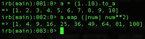
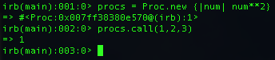
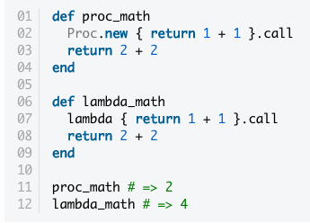

Technical Blog
| Home | Blogs | Resume | Bio | About | Contact Me |
|---|
Blocs, Procs, and Lambdas
Week 5
Blocs
Blocks are not objects. They are arguments that are used with methods such as #each and #map. They are contained with "{}" squiggly brackets and usually defined like.
Procs
Procs are also known as procedures. Unlike blocks, procs are objects. You can create them like you create a class.new. With the proc, you call a bloc in order to call your procedure. It's very similar on how you can call a block with the #each and #map methods. It's similar to using a method with a block. When the proc is called, the block will run and output the result. As you can see it runs very similar to a method when called in this class.
Lambdas
Lambdas are very similar to procs. A good example is that they are procs that check for argument errors. Unlike procs, they can engage other arguments while procs only initiate the items in the blocs associated with them. Unlike procs, lambdas can use return values and will come up with ArgumentErrors when methods have incorrect amount of arguments. This last example was taken from tutsplus. It shows how procs only run the code in the bloc versus lambda which works the return value.
Some additional references I used for this blog
Adam Waxman's Technical BlogErik Trautman's Blog
tutsplus.com